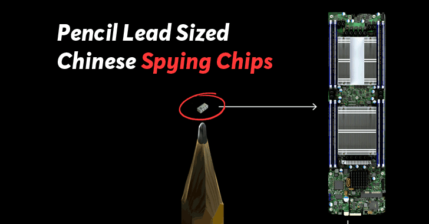
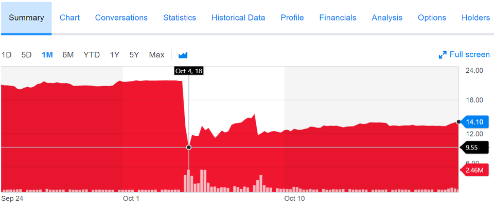
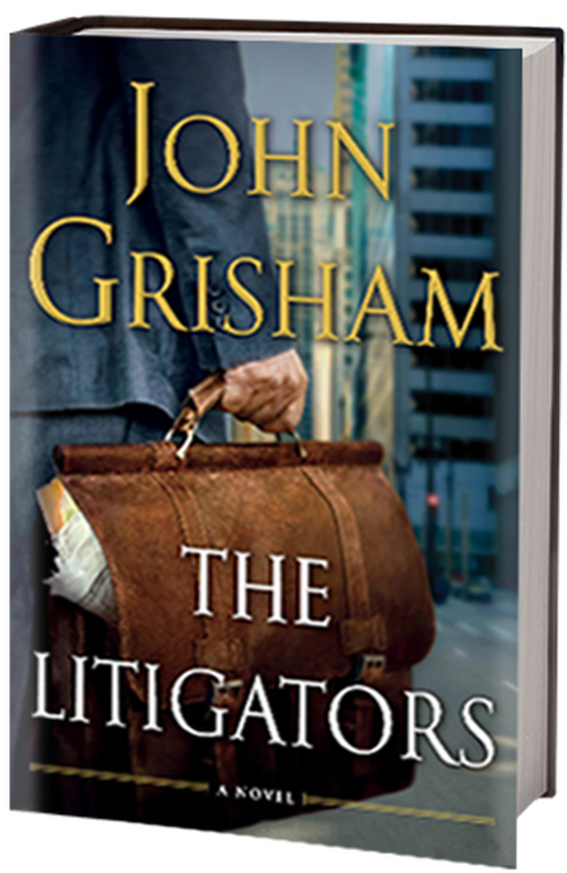
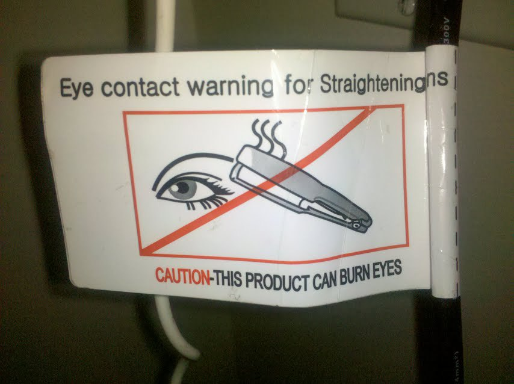
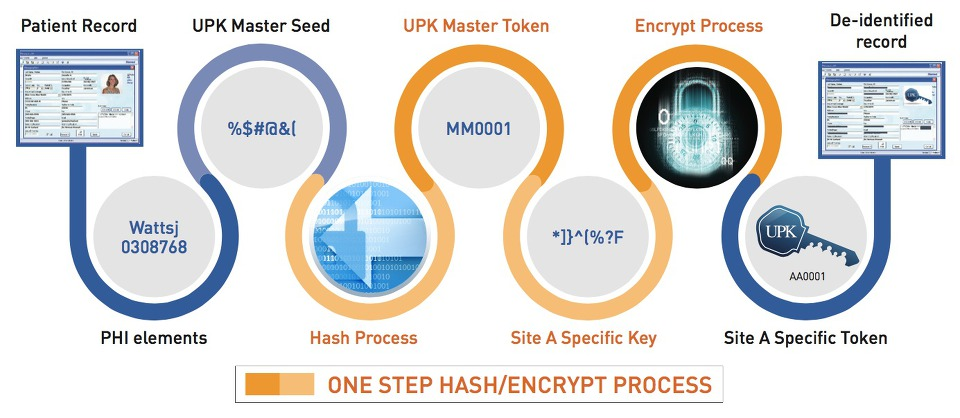
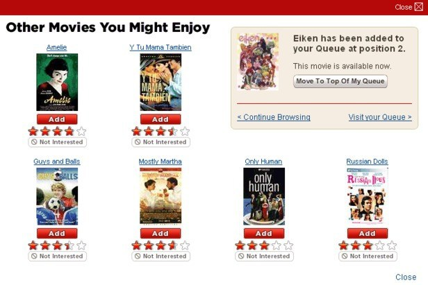
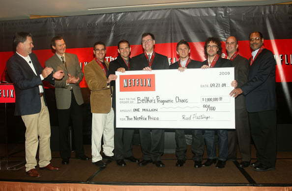
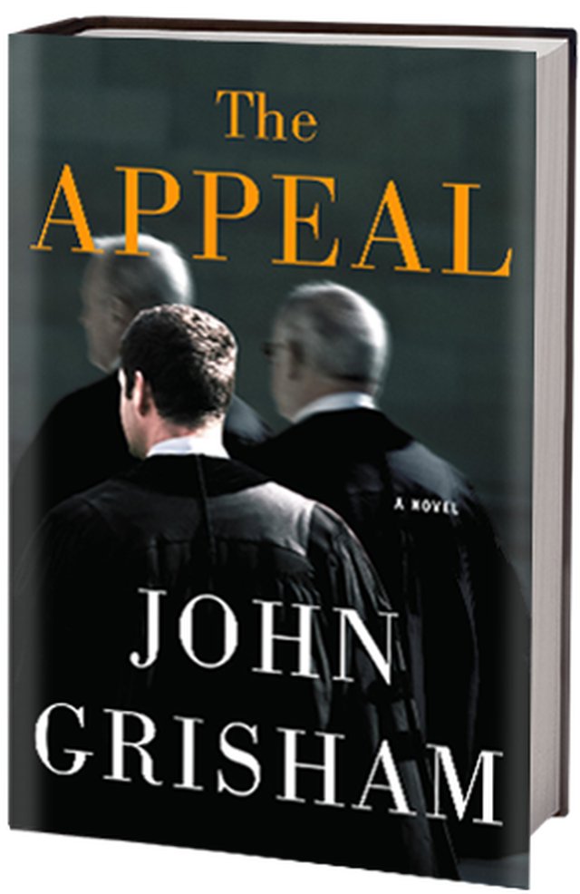
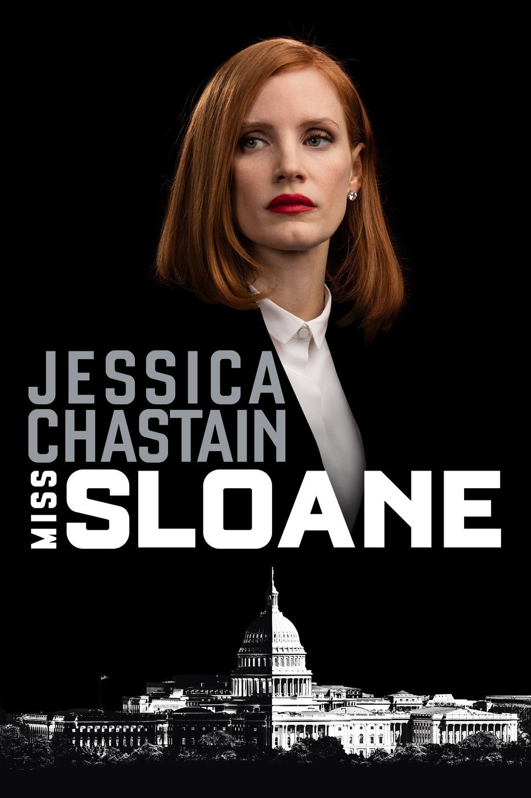

칩, 변호사, 그리고 넷플릭스 이야기
게시: 2018-10-22T06:30:00+09:00
최근 중국이 아마존과 애플의 데이터센터에 납품되는 수퍼마이크로(Supermicro)사의 서버에 쌀알만한 크기의 스파이칩을 심어서 정보를 빼내려했다는 블룸버그 뉴스가 세상을 흔들었습니다. 맨 처음에 그 뉴스를 보고 저는 전형적인 가짜 뉴스라고 생각했었습니다. 이유는 다음과 같습니다.
1) 모든 HW는 그 자체만으로 동작할 수는 없고, 펌웨어(firmware) 및 운영체제(OS) 등의 소프트웨어의 지원이 있어야 동작합니다. 아마존과 애플 등의 기업이 서버를 납품 받은 뒤 어떤 운영체제를 쓸지, 또 언제 펌웨어를 업데이트할 지 모르는 상황에서 저런 스파이칩을 심어둔다는 것은 너무 요행을 바라는 일입니다.
2) 일반 클라우드에 사용되는 서버라면 그 속에 탑재된 데이터가 보안상으로는 크게 쓸모없는 경우가 많습니다. 반대로 기업이나 국가의 기밀 데이터를 처리하는 서버라면 인터넷 망과는 분리된 곳 내에 위치하는데, 그럴 경우 어차피 스파이칩을 탑재해도 외부로 데이터를 빼돌리거나 외부로부터 명령을 받을 방법은 없습니다.
3) 마이크로칩이라는 것이 의외로 크기도 크고 전기도 많이 먹습니다. 저런 쌀알만한 스파이칩에서 할 수 있는 오퍼레이션은 매우 제한적이라서, 특정 데이터만 골라내어 특정 장소로 보내는 일은 사실상 불가능합니다. 할 수 있는 일이라면 네트워크 상을 오가는 모든 정보를 압축해서 어딘가로 redirect하는 것은 가능할지도 모르겠는데, 그럴 경우 그 엄청난 데이터 중에서 쓸모있는 정보를 추출하는데에 엄청난 컴퓨팅 파워가 필요합니다. 그건 정말 쓰레기 속에 포함된 미세 금가루를 모아서 금괴를 뽑아내겠다는 계획과 비슷합니다. 비용 대비 효용성이 너무 떨어지는 일입니다.
4) 게다가 이렇게 하드웨어 칩을 심어놓는다는 것은 적발될 위험이 너무 큽니다. 위에서 가정한대로 모든 네트워크 트래픽을 어딘가로 redirect하는 방식이라면 일부 서버들에서 지나치게 많은 네트워크 트래픽이 나가는 것이 들키지 않을 수가 없습니다. 특히 대부분의 클라우드 업체들은 들어오는(in-bound) 트래픽에 대해서는 과금을 하지 않지만 나가는(out-bound) 트래픽에 대해서는 과금을 하거든요. 들킬 수 밖에 없습니다.
5) 그렇게 무식한 방법 말고 서버에 백도어를 만드는데 결정적인 도움이 될 무언가의 기능을 그 스파이칩에 심어놓을 수 있는 것도 아닌가라는 생각도 할 수 있습니다. 글쎄요, 하드웨어 기능만으로 정상적인 OS 및 보안 소프트웨어 기능을 override하는 것이 가능할 것 같지 않습니다만, 가능하다고 해도 그런 건 그냥 순수하게 소프트웨어적으로 파고드는 것이 훨씬 나을 것입니다.
6) 무엇보다, 이렇게 많은 노고와 비용을 들여서 들킬 위험이 높은 이런 일을 벌이는 것은 바보같은 짓입니다. 그럴 돈이 있다면 차라리 뇌물을 주고 정보를 캐내는 것이 훨씬 더 성과가 좋을 것입니다. 설령 미국인들이 애국심이 너무 투철하여 아무도 뇌물을 받지 않는다고 하면 차라리 그 돈으로 (여태껏 하던 것처럼) 바이러스나 맬웨어 등의 소프트웨어 방식으로 해킹을 하는 것이 훨씬 더 상식적이고 효율적이며 또 안전합니다.

(많은 분들이 이 칩 사진을 실제 발견된 칩의 모습이라고들 생각하시더군요. 실제로 이 사진이 진짜 그 칩의 실제 사진인지 또는 단순한 예시 그림인지에 대해서는 아무 설명도 근거도 없다고 합니다.)
저는 당연히 하루이틀 안에 저 뉴스가 오보라든가 가짜뉴스였다든가 하는 식으로 해명이 될 줄 알았는데, 소동이 점점 커져서 깜짝 놀랐습니다. 무엇보다 의아했던 것은 해외든 국내든 저런 하드웨어나 OS, 네트워크 및 보안 분야의 전문가들이 '말도 안되는 소리다' '기술적으로 불가능하다' 라는 말을 할 줄 알았는데 아무도 안하시더라고요. 생각해보면 그것도 이해는 가는 것이, 내가 못한다고 해서 다른 사람도 못할 거라고 큰 소리치는 것은 위험하거든요. 저도 그런 보안 분야에 전문가가 아니라서 혹시 그런 것을 하실 수 있는 분이 속으로 비웃고 계실 수도 있겠습니다. 미국이나 영국의 각종 정보기관들에서도 이 보도에 대해서는 '블룸버그의 보도가 틀렸다는 말은 못 하겠고, 블룸버그의 보도가 틀렸다는 기업들의 보도는 맞다' 라는 식의 모호한 태도를 취하고 있습니다. 저도 감히 블룸버그의 보도가 가짜 뉴스라고는 말할 수 없습니다. 그냥 저는 제 상식으로 볼 때 가짜 뉴스같다라고 생각한다는 소신을 밝힐 뿐이지요.
그렇다고 이번 포스팅이 그런 기술 쪽 이야기를 하려는 것이냐 하면 전혀 그렇지 않습니다. 오늘 주제는 바로 미국의 손해 배상 소송입니다. 당연히 저는 법률가가 아니므로 전문 지식은 없고요, 단지 제가 존 그리셤의 법정 스릴러 소설을 많이 읽었습니다. 존 그리셤은 변호사 출신의 소설가인데, 우리나라에서는 톰 크루즈 주연의 영화 '그래서 그들은 바다로 갔다'의 원작 소설인 'The Firm'으로 유명하지요.
스파이 칩 이야기로 시작했다가 갑자기 웬 법정 스릴러 소설 이야기로 방향이 튀느냐하면 아래 기사 때문에 그렇습니다.
https://finance.yahoo.com/news/super-micro-investor-alert-faruqi-171200263.html
위 스파이 칩 뉴스가 나오자마자 애플과 아마존 등 블룸버그에서 보도한 피해 당사자들은 '전혀 그런 사실 없다'라고 반박 보도를 했습니다. 그 이후 이어진 보도에서 지목된 통신사들도 '난 그런 칩 본 적도 없다'라고 다 부정했고요. 하지만 당장 기업들은 그 보도로 인해 주가에서 큰 손실을 보았습니다. 특히 문제의 서버를 만들었다는 수퍼마이크로의 주가는 보도가 나온 날 40% 넘게 폭락했습니다.

(만에 하나, 이 스파이칩 소동이 중국 때리기의 일환으로 지어낸 이야기라면, 왜 하필 수퍼마이크로사가 그 타겟이 되었을까요 ? 중국에서 서버를 생산한다는 점 외에도, 수퍼마이크로는 대만계 미국인이 창립한 회사이긴 합니다. 하지만 수퍼마이크로는 상당히 유명하고 클 뿐만 아니라 나스닥에 상장된 미국 회사로서, 많은 미국 금융사들과 개인들이 저 회사에 투자를 한 상태입니다. 이걸 그냥 중국 때리기를 위해서 지어낸 뉴스라고 보기엔 피해가 너무 큽니다. 결론적으로 저는 이게 가짜 뉴스인지 단순한 오해인지 혹은 진짜 뉴스인지 전혀 모르겠습니다.)
다른 나라들은 몰라도, 미국에서는 손해가 발생했으면 당장 변호사들이 나섭니다. 아니나 다를까, 위 링크에서처럼, 저 보도가 나온지 1주일만에 '이 보도로 인해 5만불 이상의 투자 손실을 보신 수퍼마이크로 주주님들 모십니다'라는 광고성 기사가 나왔습니다. 자세한 내용은 물론 없고, 그냥 '주주님들께 비용이나 책임 부담이 가는 일 없으니 연락을 주세요'라는 것이지요. 이런 소송의 결과는 당장 나오지 않고, 1심을 거쳐 항소심까지 적어도 몇 년간을 질질 끄는 경우가 보통입니다. 그 과정에서 그냥 적절한 금액에 합의를 하는 경우도 꽤 많은 모양입니다.
If you invested in Super Micro stock or options and would like to discuss your legal rights, click here: www.faruqilaw.com/SMCI. There is no cost or obligation to you.
You can also contact us by calling Richard Gonnello toll free at 877-247-4292 or at 212-983-9330 or by sending an e-mail to rgonnello@faruqilaw.com.
우리나라에서도 이렇게 대규모 손해가 발생한 사건이 있었지요. 바로 대진 라돈 침대 사건입니다. 제 지인 중에 그 피해 당사자가 있어서 그 과정을 대략 들었는데, 법무법인에서 저런 식으로 '대진 침대 피해 소비자 모십니다'라는 식의 홍보가 있었습니다. 그런데 내용을 보니 미국 법무법인의 광고와 결정적인 차이가 있더군요. 우리나라에서는 '손해 배상 소송을 원하시는 고객님들은 법무법인에게 10만원씩 비용을 입금하셔야 하고, 건강 이상 등으로 인한 피해까지 보상받고 싶으신 분은 30만원씩 입금하셔야 합니다. 건강검진 및 그 진료기록 발부 비용은 별도로 고객분 부담입니다' 라고 하더라고요. 최근 나온 보도를 보니 대진 침대 측의 자금이 고갈되어, 어차피 남은 자산을 다 처분해도 피해자 1인당 돌아갈 금액은 18만원도 되지 않는다고 하니, 10만원씩 납부한 사람들도 그렇고 특히 30만원씩 납무한 사람들은 오히려 손해 보는 것이 아닌가 하는 우려도 듭니다. (나중에 이야기를 들어보니 그 법무법인에서는 보험사를 상대로 손해배상을 청구할 수 있다고 주장하던데 자세한 이야기는 못 들었습니다.)
즉, 피해자분들에게 아무 비용 부담이 가지 않는다는 미국 법무법인과는 결정적인 차이가 있는 셈입니다. 존 그리셤의 소설들 중 꽤 많은 소설이 저렇게 교통사고라든가 의약품/제조품 하자에 의한 피해에 대해 무작정 소송을 걸어 먹고 사는 소위 '길거리 변호사'에 대한 것들입니다. 그 중에는 '불법의 제왕'(The King of Torts)처럼 그런 집단소송제도의 폐해를 다룬 것도 있습니다만, 팔은 안으로 굽는다고 기본적으로 존 그리셤은 그런 변호사들이 사회에 끼치는 영향 중 순기능 부분을 많이 다루고 있습니다.

가장 최근에 읽은 존 그리셤 소설은 '소송사냥꾼'(The Litigators, '소송인들')이었습니다. 이것도 매우 재미있었는데, 한줄 요약하면 대형 제약사의 의약품에 하자가 있다는 소문만 믿고 무턱대고 소송을 걸었다가 낭패에 처하는 변두리 동네의 3류 길거리 변호사들 이야기입니다. 반쯤 코미디에 가까운 이 소설 속에서의 그 3류 변호사들도 저 위에 제가 인용한 링크의 변호사들처럼 '피해를 보신 분들은 제게 연락주세요, 비용이나 책임 부담 없이 여러분의 권리를 찾아드립니다 전화 번호 xxxxx' 라는 광고를 합니다. 그러나 그 변호사들은 돈이 없어서 저렇게 야후 파이낸스 뉴스에 나오거나 TV 광고를 하지는 못하고, 비용을 아끼려고 전단지를 직접 뿌리거나 동네 클럽 트럼프 카드 뒷면 등에 광고를 게재하는 정도입니다.
미국에서도 소송에는 돈이 듭니다. 그것도 아주 많이 듭니다. 물론 저는 존 그리셤 소설의 애독자일 뿐 전혀 법률 지식은 없습니다만, 미국에서는 그런 소송 비용을 소송 당사자, 즉 피해를 입은 원고가 부담하는 것이 아니라, 그런 원고들을 찾아내서 모으고 설득하여 위임장을 받은 변호사들이 부담하는 경우가 많은 모양입니다. 변호사들은 피해자들을 모집하는 광고비 뿐만 아니라 피해자들의 건강 검진 비용도 다 부담하고, 심지어 법정에서 원고에게 유리한 증언을 해줄 각종 의학 약학 전문가들에게 줄 수고비 등도 다 부담합니다. 그런 전문가들은 한번 증언을 해주는 대가로 7만불 정도를 받는 것으로 나오는데, 이 길거리 변호사들의 평소 수입이 연간 5만불 정도입니다. 그런 전문가를 1명만 부르는 것은 말도 안 되고 여러 명을 불러야 합니다. 가난한 동네 변호사들에게는 엄청난 비용입니다. 그러니 이런 제조물 배상책임 소송은 당사자들에게는 정의와 불의의 대결이기도 하겠지만 변호사들에게는 하이 리스크 하이 리턴의 거액 법률 투자 사업에 가까운 셈입니다. 몇 년씩 끌 수도 있는 이런 재판에서 이기면 변호사들은 일확천금이지만, 지면 빚더미 위에 오르는 것이지요.
저런 소송 제도에는 장단점이 있습니다. 장점으로는 피해 소비자 입장에서는 기업을 상대로 소송을 거는 것이 매우 쉽기 때문에, 법률적 지식이 없어 일방적으로 당할 수 밖에 없는 소비자들도 쉽게 손해 배상을 받을 수 있고, 그로 인해 기업들이 사업을 할 때 소비자들에게 피해가 가는 일이 없도록 매우 조심할 수 밖에 없다는 점이 있습니다. 특히 징벌적 배상 제도가 있는 미국에서는 소비자들에게 피해가 갈 것을 알면서도 회사 수익을 위해 뭔가 좋지 않은 짓을 저지른 기업은 그로 인해 회사가 파산할 지경에 이르는 손해를 볼 수 있으니 더욱 그렇습니다.
하지만 단점도 분명히 존재합니다. 언제 무슨 말도 안 되는 꼬투리를 잡아 소송을 당할지 모르니 그런 위험에 대비하여 제품 연구 설계 생산 단계에서부터 변호사들의 도움을 받을 수 밖에 없고 그로 인해 비용이 너무 올라간다는 것입니다. 특히 소송이 벌어지면 법률 서비스 비용이 엄청나게 들어갈 수 밖에 없는데, 그런 변호사 비용이 결국 모두 제품 비용에 반영될 수 밖에 없고 그 부담은 결국 대다수 소비자들에게 전가되는 형태가 되는 것입니다.
미국은 변호사들이 넘쳐나는 사회이고, 그로 인한 순기능도 많지만 그 때문에 많은 폐해가 발생하기도 합니다. 가령 (농담인지 진짜인지 모르겠는데) 미국 마이크로웨이브 오븐에는 '살아있는 애완동물을 넣고 돌리지 마시오'라는 황당한 경고 문구가 적혀 있는데 그건 미국인들이 하도 멍청해서 그렇다라는 소리를 들어보셨을 것입니다. 그러나 실은 그게 미국인들이 멍청해서 그런 것이 아니라, '소비자들에게 충분한 경고를 하지 않아서 이런 피해가 발생했다'라는 소송을 당하지 않으려고 법률 자문을 거치다보니 그런 경고 문구가 제품이 붙게 되었다는 소리도 들어보셨을 것입니다.

("뜨거운 고대기를 눈에 갖다 대지 마세요. 그러면 눈이 아야 해요")
또 다른 예로, 주택 임대업도 그렇습니다. 저는 개인적으로 FIRE(Finance Independence Retire Early, 즉 조기 은퇴)에 관심이 많아서 레딧의 FIRE 쓰레드에 가끔씩 들어가 보는 편입니다. 그런데 노후를 위한 투자로는 부동산 임대업이 최고인 우리나라와는 달리, 미국 쪽에서는 노후 대비용 투자로 무조건 펀드를 선호하더라고요. 물론 그 쪽에서도 rental properties라고 해서 부동산 임대도 재테크 수단으로 하고 있다는 사람들이 종종 글을 올리는데, 대부분의 사람들은 그런 부동산 임대업이 노후 준비에는 부적절하다고 보고 있더군요. 이유는 부동산 임대업을 할 경우 건물 관리와 소송에 너무 많은 시간과 노력과 비용이 들어간다는 것입니다. 누가 댓글로 이런 말을 써놓은 것을 읽었는데, 미국이 진짜 '길거리 변호사들의 나라'라는 느낌이 확 오더라구요. "세입자들은 지가 멍청해서 계단에서 넘어지더라도 집 주인에게 소송을 건다구 !" 하긴 그럴 수 밖에 없는 것이, 길거리 변호사들이 제일 많이 들락거리는 곳이 바로 병원 응급실입니다. 뭔가 다쳐서 누워있는 환자에게 무작정 다가가서 왜 다쳤냐고 묻고는 그냥 집에서 넘어졌다고 해도 '그건 미끄럼 방지 장치를 안 해놓은 집주인 잘못이다, 내가 치료비와 위자료로 한 몫 챙기게 해주겠다, 소송 비용은 내가 댈테니 이 위임장에 서명만 해라' 라고 나오면 대부분의 사람들은 서명하지 않겠습니까 ?
소비자의 피해 보상이 우선이냐 기업의 활동이 더 우선이냐의 문제는 꼭 선악의 대결은 아닙니다. 기업 활동이 지나친 소송으로 인해 위축된다면 결국 일자리가 줄어들어 서민들의 생계부터 막막해질테니까요. 다만 존 그리셤 소설 속에 나오는 아귀떼 같은 길거리 변호사들의 맹활약에도 불구하고 미국에서는 계속 혁신적인 기업들이 나오는 것을 보면, 큰 그림에서는 저런 잦은 소송이 결국은 순기능을 한다고 보는 것이 맞을 것 같습니다. 위에서 언급한 존 그리셤의 '소송사냥꾼'이라는 소설 속에서도, 비록 저 3류 변호사들은 망신과 함께 큰 금전적 손해를 보게 되지만, 결국 사회적 순기능을 보여주는 훈훈한 결말로 마무리됩니다. 더 자세한 이야기는 스포일러가 되니까 여기까지만 할게요.
우리나라는 피해를 막기 위한 규제는 많지만 정작 소비자에게 피해가 발생했을 때 보상을 받을 길은 막막한 경우가 많은 것 같습니다. 그냥 제가 느낀 감이 그렇다는 것이고, 실제로 외국 사례와 비교할 때 어떤지 자료는 전혀 없습니다. 인공지능 관련하여 어떤 교수님이 불평하시는 것을 들었는데, 그 분 말씀에 따르면 '미국 등에서는 의료 정보 등 개인 정보 등도 이 정보가 어떤 개인에 대한 것인지 알아볼 수 없도록 비식별처리를 거치면 얼마든지 이용하여 품질 좋은 인공지능을 개발하는데 사용할 수 있는데, 우리나라에서는 그냥 무조건 개인 정보를 이용하지 못하도록 하는 바람에 인공지능 개발에 애로사항이 많다'는 것입니다. 그 말씀이 사실인지 여부인지는 제가 잘 모르겠습니다만, 미국은 아귀떼 변호사들 때문에라도 우리나라에 비해 꼭 기업 친화적인 사회가 아니라는 사례는 하나 알고 있습니다.

(구글에서 de-idenitification 이라는 키워드로 찾은 그럴싸한 비식별화 과정입니다. 무슨 SW 제품의 설명서 같기도 하군요.)
넷플릭스가 어떤 회사인지는 다들 아실 것입니다. 넷플릭스가 성공할 수 있었던 비결 중 하나는 그 추천 시스템이었습니다. 가령 저처럼 제2차 세계대전 영화 좋아하고 좀비 영화 좋아하는 사람이라면, '죽은 나찌 병사들이 좀비로 부활해 쳐들어온다'라는 내용의 영화가 있다면 비록 잘 안 알려진 영화라고 해도 돈 내고 볼 가능성이 높습니다. 그런 식으로, 몇 개의 영화를 본 시청자에 대해, '이런 영화도 좋아하실 것 같네요' 라며 다른 영화들도 시청할 것을 추천해주는 것이 추천 시스템입니다. 넷플릭스 자체 평가로도, 이때 시청자의 취향을 얼마나 잘 파악해서 제대로 된 추천을 해주느냐가 매출에 매우 큰 영향을 끼친다고 합니다.

(넷플릭스 자체 평가로는 매출의 무려 75%가 이 추천 시스템에 의한 것이라고...)
넷플릭스에는 많은 데이터 과학자(data scientist)들이 있어서 자체적인 추천 시스템을 만들어 가지고 있지만, 더 나은 시스템을 개발하기 위해 현상 공모를 했습니다. 즉, 자사가 보유한 시청자들 및 그들이 본 영화, 그리고 거기에 대해 시청자들이 매긴 영화 평점이 들어있는 데이터셋(dataset)을 제공하고, 그로부터 가장 정확한 예측을 해내는 모델을 개발해내는 팀에게 1백만불을 주는 경진 대회를 연 것입니다. 이 연례 경진 대회를 넷플릭스 프라이즈(Netflix Prize)라고 했습니다. 빅데이터 세계의 문학 공모전 같은 것이었지요. 이 대회를 통해서 빅데이터 알고리즘에 많은 발전이 있었습니다.

(이 넷플릭스 프라이즈에는 어떤 개인이나 기관, 단체든 다 참여가 가능했습니다. 외국인들도 물론 참여할 수 있었고요.)
물론 이 데이터셋의 자료는 철저히 비식별화처리가 된 것이었습니다. 시청자의 ID는 물론, 영화 제목까지도 철저히 비식별화 처리를 했습니다. 따라서 연구자들이 볼 수 있는 데이터는 가령 시청자 u00187가 영화 m01834을 보고 3점, 영화 k089312을 보고 4점을 줬다 라는 식으로 되어 있었습니다. 비식별화 처리를 한 이유는 오로지 수학적 모델에 의해서만 정확한 예측을 하는지 확실히 평가하기 위함도 있었지만, 가령 nasica라는 이름의 시청자가 '애마부인 바람났네'라는 영화를 보고 5점 만점을 줬다는 것이 알려지면, nasica라는 필명으로 페이스북을 하면서 점잖은 척 하던 사람이 망신을 당하는 사태가 있을 수 있기 때문이었습니다. 그것도 개인 정보라고 할 수 있었던 것이지요.
그런데 이렇게 데이터 과학의 발전에 큰 공헌을 해오던 넷플릭스 프라이즈는 2010년 돌연 중단되었습니다. 이유는 역시 소송 때문이었습니다. 두 명의 데이터 과학자들이 IMdb(Internet Movie Database)에 공개된 영화 평점 기록과 맞춰보면 넷플릭스 프라이즈에서 제공된 비식별화 처리가 된 데이터셋에서도 실제 시청자 ID를 알아낼 수 있다는 것을 증명해보였던 것입니다. 이 연구에 기반하여, 2009년 겨울 네 명의 넷플릭스 회원들이 넷플릭스가 자신들의 개인 정보를 부당하게 공개했다는 집단 소송을 제기했습니다. 결국 다음 해에 넷플릭스는 이 소송꾼들과 (알려지지 않은 조건으로, 아마도 합의금을 지불하고) 합의를 했고, 넷플릭스는 이 경진 대회를 폐지했습니다.
이 사건을 통해서 보면, 미국에서는 법을 잘 지켰다고 하더라도 어쨌거나 기업의 제조물 또는 서비스로 인해 개인이 피해를 입으면 그 기업은 손해 배상을 할 책임을 지는 모양입니다. 우리나라에서는 어떤지 잘 모르겠습니다. Deep learning을 이용한 인공지능 훈련에는 많은 데이터가 필요합니다. 특히 당장 적용하기 매우 좋은 use case가 바로 의료 분야인데, 이 분야를 선점하기 위해서는 민감한 개인 의료 기록이 많이 필요합니다. 그래서 비식별화를 한다는 조건 하에, 많은 연구 기관들이 개인 정보를 그런 인공지능 개발에 자유롭게 사용할 수 있도록 법제를 개정해야 한다는 목소리들이 있지요. 저는 거기에 대해서 찬성 반대 의견이 따로 없습니다만, 나중에라도 어떤 진보된 데이터 기법에 의해, 그런 비식별화된 데이터셋 속의 환자의 이름이 사실은 nasica이고 이 환자는 치질과 성병, 무좀 등을 앓았다는 것을 알 수 있게 된다면, nasica라는 사람은 해당 병원이나 연구소로부터 어떤 배상을 받아낼 수 있을지 궁금하기는 합니다.
사족)

존 그리셤의 작품은 대부분 아주 재미있습니다만, 제게 아주 인상적이었던 작품은 '어필'(The Appeal, 항소)라는 소설이었습니다. 한줄 요약하면, 어느 미시시피 시골 마을을 환경 오염으로 망쳐 놓은 화학회사가 긴 소송 끝에 1차심에서 엄청난 액수의 징벌적 배상을 하라는 판결을 받게 되자, 공석이었던 미시시피 주 대법원(supreme court) 판사직 선거에서 보수파 인물을 전폭적으로 지원하여 당선시킨 후 항소심에서 결국 승리를 따낸다는 씁쓸한 내용입니다. 미국은 판사를 다 지역 주민들의 선거로 뽑더라고요. 소설 속에서 화학회사의 선거 지원 과정에 불법은 전혀 개입되지 않습니다. 그 소설에서 존 그리셤이 주장하는 바는 제게는 다소 뜻 밖이었습니다. 그가 주장한 바는 '대법원 판사직을 선거로 뽑을 경우 막대한 자금력을 동원할 수 있는 자본가들과 기업들이 승리할 수 밖에 없으므로 그런 판사들은 선거제가 아닌 임명제로 바꾸어야 한다'는 것이었습니다. 이는 주민들의 투표율이 매우 낮은 미국의 현실을 반영하는 것이라고 할 수 있습니다.
그런 미국 정치 현실은 정말 재미있게 본 '미스 슬로운'(Miss Sloane)이라는 영화에서도 나옵니다. 거기서 제시카 차스테인이 열연한 미스 슬로운이 말하지요. "총기 규제에 대한 여론 조사를 하면 항상 규제 찬성이 높게 나오지만, 정작 의회에서는 항상 반대로 귀결되는 이유를 아느냐 ? 총기 규제 찬성하는 사람들은 투표장에 가지 않기 때문이다. 열혈 옹호론자는 투표장에도 갈 뿐더러 규제 반대를 주장하는 의원들에게 정치 후원금을 보낸다." 정의고 뭐고 결국 정치는 투표로 결정을 짓는 법인데, 그 선거에서 승리하기 위해 가장 중요한 것은 바로 돈이라는 것이지요.
영화 속에서는 미스 슬로운의 자기 희생으로 그런 부조리를 깼습니다. 그러나 현실에서는 그런 사람이 없지요. 그런 부조리를 깰 수 있는 유일한 방법은 시민들의 높은 투표율 밖에 없습니다. 물론 가짜 뉴스에 대한 적극적인 대응도 필요하겠지요.

(진짜 재미있게 보았습니다. 보니 제시카 차스테인은 무엇보다도 발음이 명확하고 어려운 대사를 술술 잘하는 것 때문에 좋은 역할을 많이 맡는 것 같아요. 역시 대배우의 기본은 얼굴보다는 발음과 발성인 것 같습니다.)
Source : https://www.bloomberg.com/news/articles/2018-10-04/the-big-hack-amazon-apple-supermicro-and-beijing-respond
https://www.theregister.co.uk/2018/10/08/super_micro_us_uk_intelligence/
https://en.wikipedia.org/wiki/John_Grisham
https://en.wikipedia.org/wiki/The_Litigators
https://en.wikipedia.org/wiki/Netflix_Prize